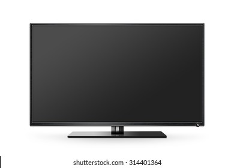
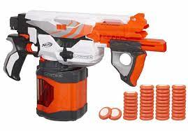
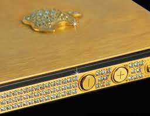

1.Test Image - 
Output on wolfram -
flat panel display
Output on Mobilenet Model -
black screen
Result -
wolfram Is More Accurate
2.Test Image - 
Output on wolfram -
paintball gun
Output on Mobilenet Model -
nerf gun
Result -
Mobilenet Is More Accurate
4.Test Image -
Output on wolfram -
station wagon
Output on Mobilenet Model -
car
Result -
Mobilenet Is more accurate
5.Test Image - 
Output on wolfram -
phone
Output on Mobilenet Model -
rule
Result -
wolfram Is More Accurate
6.Test Image -
Output on wolfram -
computer mouse
Output on Mobilenet Model -
chair
Result -
wolframIs More Accurate
8.Test Image -
Output on wolfram -
substance
Output on Mobilenet Model -
sugar
Result -
wolfram Is More Accurate